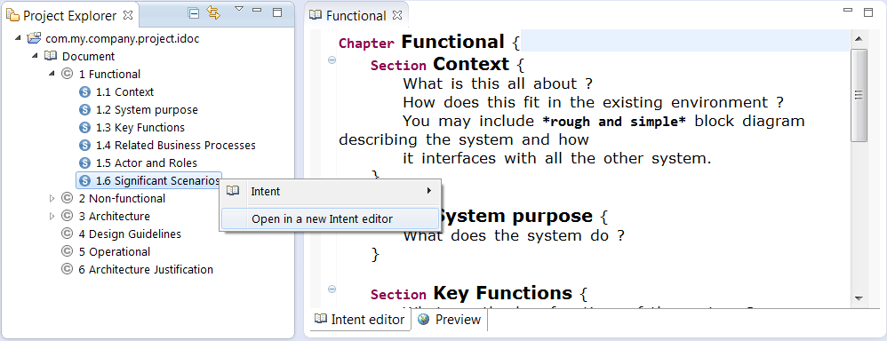
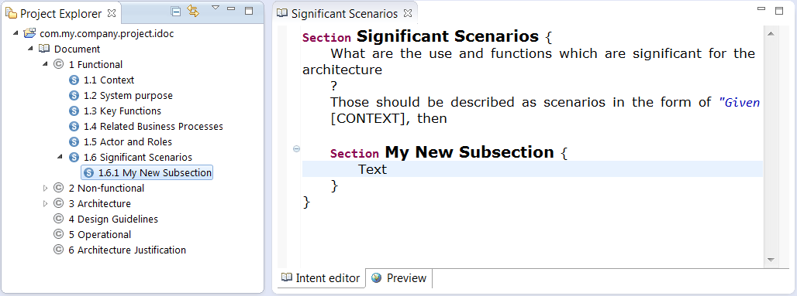
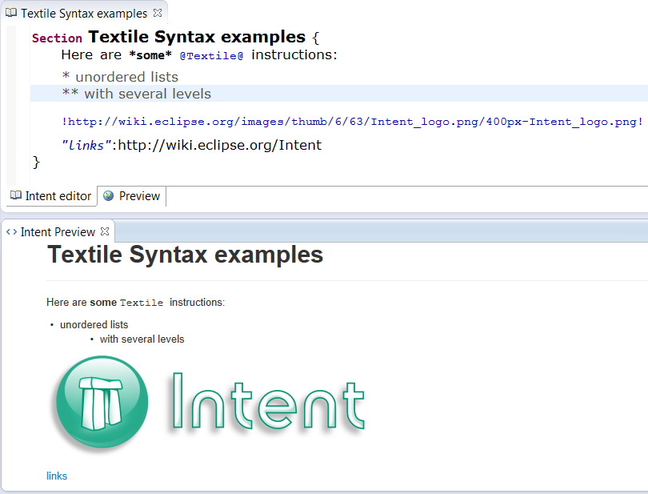
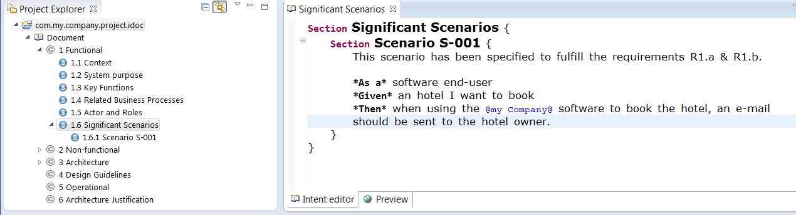
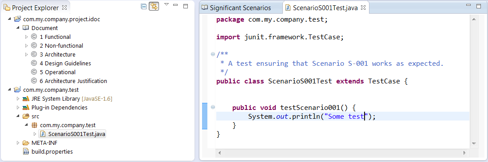
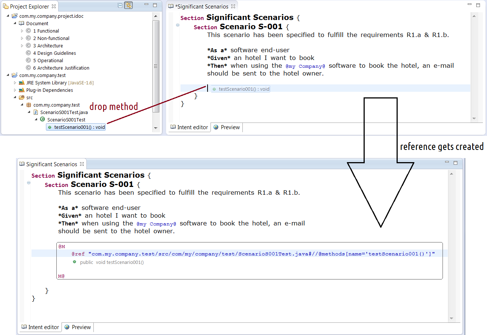
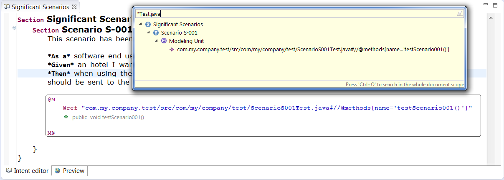
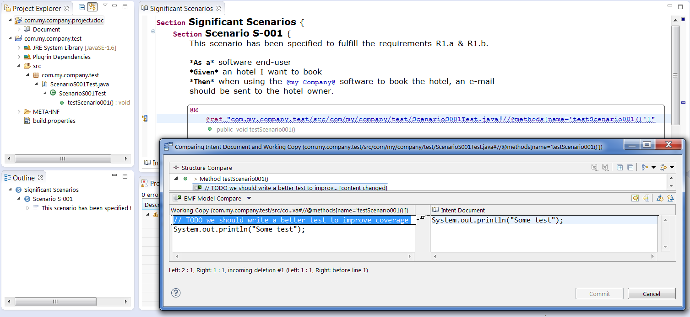

This Getting started guide will give you an overview of the Intent features on a simple example.
In a nutshell, Intent is a documentation environment providing tooling to:
Project Explorer view (Alt + Shift + Q / Q and select Project Explorer or Window > Show View... > Project Explorer)Create New Wizard (Ctrl + N or right-click in the project explorer and select New..)Intent Project Wizard and click NextFinish now, an empty Intent document will be created.Next, you will be able to choose between a set of documentation templates. The Standard Software Documentation Template has been created to help you writing meaningful documentation. By clicking on Finish now, an Intent document initialized with the template you selected will be created.Close the Intent editor thas has been automatically opened. Let’s first focus on the Intent project in itself.
As you can see, an Intent project is structured as any documentation: it contains chapters, sections and sub-sections. Notice that you can open an Intent editor on any-sub part of the documentation, no matter how small. The idea is that you have above the eyes only the pieces of doc which are relevant in your current context, without having to handle an hundred of pages long document. Consequently, we strongly advice you to open Intent editors on sub-parts of the doc instead of the whole Intent document. To do so, simply double-click on an Intent element inside the project explorer view (e.g. the chapter "1 Functional").
Now that the chapter 1 is opened, if you double-click on one of its sub-sections (e.g. "1.6 Significant Scenarios", the sub-section will be selected inside the current editor. If you want to open a specific editor on this section, right-click on it and select the Open in a new Intent editor action.

Notice that there are other ways to open Intent editors (e.g. from the Problem View ), that will be detailed later in this guide.
By right-clicking on the Intent Project and selecting Export documentation as HTML, you will be able to export your Intent documentation as an HTML Bootstrap document.
Many other formats will soon be available, please do not hesitate to make requests on the Intent forum if you want a specific export format to be supported by Intent.
This section will show how you can use Intent to write "traditional" documentation, i.e. explanations in natural language. As we will see later , you will be able to link pieces of this documentation with technical artifacts.
You can customize the appearance of the Intent editor (line wrapping, bracket matching, colors...) by using the Intent Preferences Page .
As explained earlier , open an Intent Editor on the Section 1.6 entitled "Significant Scenarios".
Intent offers a real-time HTML preview of the documentation you are currently writing. You can access to this preview by:
Alt + Shift + Q / Q and select Intent Preview or Window > Show View... > Intent > Intent Preview)This view can be useful to quickly make sure that the documentation you are writing is correctly rendered. It is refreshed any time you save an Intent editor or when you bring to top a new Intent editor.
Notice that you can disable this real-time preview mechanism from the Intent Preferences Page , especially if you are dealing huge documents (live preview can impact Intent performances).
From the 1.6 Section you have just opened, you can create a new sub-section by:
Section MyNewSubSection { some text }Ctrl + space) and select SectionSave your document, and you will see the new sub-section appear under the Intent project.

Intent uses the Textile syntax in pure documentation zones. For example, you can put a sentence in bold by using *sentence in bold*, insert images using !imgPath!, links by using "link text":http://linktarget... Use the completion (Ctrl + space) to see all available instructions.
Any textile effect will be rendered in the Intent Preview View.

Please refer to the Textile Syntax reference for further details about the textile syntax.
Open an Intent Editor on the Section 1.6 entitled "Significant Scenarios". Let’s write a new section presenting a functional scenario detailing a requirement of our system :

Now let’s create a Java test to test the described scenario:
com.my.company.project.testtestScenario001() test method
To link this testScenario001 test method with the related piece of documentation, simply drop the method inside the Intent document. This drag & drop mechanism is extensible and works for any kind of technical artifact (Java files, model elements, MANIFEST files...).

You can see that a reference has been automatically created, and that an image showing the method and its javadoc is displayed inside the editor. Notice that this image rendering mechanism is extensible.
Once the Intent editor is saved, your scenario in the documentation and the java test method become linked. By typing ctrl + click or F3 on the reference (@ref instruction), you can open a Java editor on the corresponding artifact. Notice that this hyperlink mechanism is extensible.
By typing ctrl + O, you can use the Intent quick-outline to query your documentation to get all the documentation parts related to some Java class, model element...
For example, if you type ctrl + O and search for *Test.java, you will get all the documentation parts related to a java test. The default scope of this search is the currently opened editor, but by typing ctrl + O again you will search through the whole Intent document.

Now that you have linked a java method with a piece of documentation, any time you will modify this java method, Intent will display synchronization issues indicating the pieces of documentation that need to be updated.
Modify the method of your Scenario01 test (e.g. by adding a comment). You will see a Synchronization warning appear in the Problems view and on the Intent project. From this warning, you can use the Intent > Show in Intent editor action to open an Intent editor on the documentation parts that needs to be updated.
You are free to update the outdated documentation parts whenever you want. It is up to you: choose the most efficient way of updating documentation according to your process. The Disciplined Agile Delivery describes several processes for updating your documentation: you may want to update it right away (“document continuously”), wait for the code to stabilize (e.g. the issue is closed), update the documentation just before a release (“document late”) or when people complain (“document only when it hurts”)...
You can graphically visualize the differences between the documentation and the technical artifacts by:
Ctrl + 1 (or right-clicking and select Quick fix)See all difference in compare editor actionA pop-up displaying all changes that occurred in the workspace and were not documented is opened, allowing you to determine how you should update your textual documentation.

In this example, a comment has been added to the referenced java test method.
To fix a synchronization, first update your textual documentation, and :
Ctrl + 1 (or right-clicking and select Quick fix)Mark documentation as updated actionThe synchronization issue has now disappeared from your problem view, so now your documentation is up-to-date in regards to the changes you made on your software.
The Intent preference page (Window > Preferences > Mylyn > Intent) allows you to customize the behavior and appearance of Intent according to your own preferences.
This preference tab allows you to customize the Intent editor appearance. Notice that you can also:
General > Appearance > Colors and Fonts > Intent preference pageGeneral > Editors > Text Editors > Annotations preference page